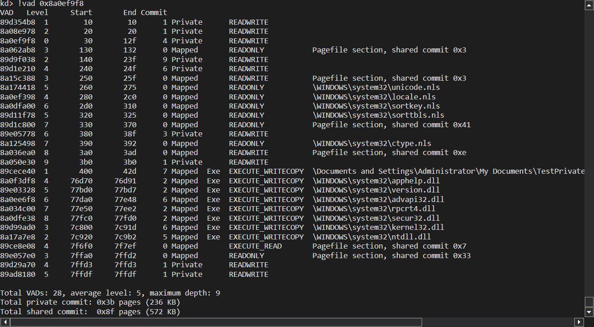
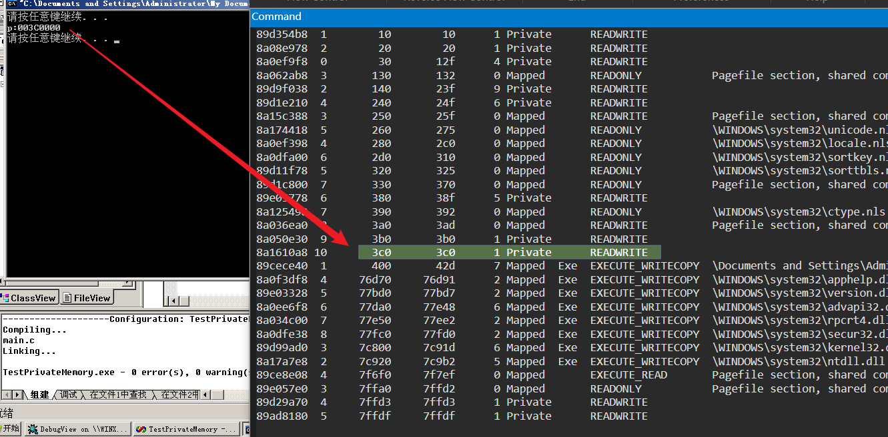
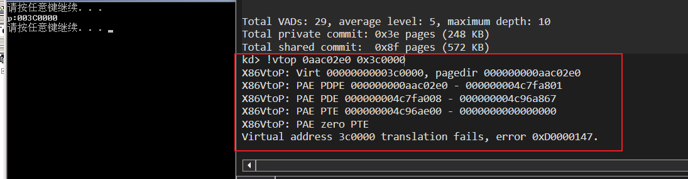

# 申请内存的两种方式
<1> 通过 VirtualAlloc / VirtualAllocEx 申请的：Private Memory
<2> 通过 CreateFileMapping 映射的：Mapped Memory
# 验证内存种类
接下来写代码去验证上面的两种内存种类。
在复习一下 VirtualAlloc 函数：
LPVOID VirtualAlloc{ | |
LPVOID lpAddress, // 要分配的内存区域的地址 | |
DWORD dwSize, // 分配的大小 | |
DWORD flAllocationType, // 分配的类型 | |
DWORD flProtect // 该内存的初始保护属性 | |
}; |
参数介绍：
申请内存的地址。可以指定地址，但是物理页我们不知道哪里的地址是否可用，所以一般为 NULL 。
申请内存的大小。一般以页的整数倍进行申请，如：两页 0x1000*2 。
申请内存的类型。
常用的有两种类型：MEM_RESERVE : 先申请线性内存，但不占用物理内存MEM_COMMIT : 占用线性内存和物理内存。一会就打破这个认知！
内存的状态。可读、可写、可执行。
#include<stdio.h> | |
#include<Windows.h> | |
int main(int argc, char* argv[]){ | |
void* p; | |
system("pause"); | |
p = VirtualAlloc(NULL,0x1000,MEM_COMMIT,PAGE_READWRITE); | |
printf("p:%p\t\n",p); | |
system("pause"); | |
VirtualFree(p,0,MEM_FREE); | |
return 0; | |
} |
先运行，不申请内存，查看此进程的内存结构：

申请后：

# 验证 MEM_RESERVE 与 MEM_COMMIT
我们使用 VirtualAlloc 这个函数的时候，第三个参数要传分配的类型，常见的一个是 MEM_COMMIT ，另一个是 MEM_RESERVE 。
前者申请后就会提供一个物理页，而后者会有记录但不会给你物理页，真的是这样的吗？
之前的代码里我们传递的参数是 MEM_COMMIT ，但我们并没有给申请的地址赋值，我们来查看一下是否有物理页：

可以看到并没有 PTE，也就是没有挂物理页。
更改上面的代码，给申请的地址赋值：
#include<stdio.h> | |
#include<Windows.h> | |
int main(int argc, char* argv[]){ | |
void* p; | |
system("pause"); | |
p = VirtualAlloc(NULL,0x1000,MEM_COMMIT,PAGE_READWRITE); | |
printf("p:%p\t\n",p); | |
system("pause"); | |
*(int*)p=666; | |
system("pause"); | |
VirtualFree(p,0,MEM_FREE); | |
return 0; | |
} |
可以看到：
kd> !vtop 0aac01e0 0x3c0000 | |
X86VtoP: Virt 00000000003c0000, pagedir 000000000aac01e0 | |
X86VtoP: PAE PDPE 000000000aac01e0 - 000000004e48a801 | |
X86VtoP: PAE PDE 000000004e48a008 - 000000004e723867 | |
X86VtoP: PAE PTE 000000004e723e00 - 800000004ea37867 | |
X86VtoP: PAE Mapped phys 000000004ea37000 | |
Virtual address 3c0000 translates to physical address 4ea37000. |
可以看到挂上物理页了。也就是说，就算使用 MEM_COMMIT 参数，如果不用的话，物理页也不会给你的。
# 堆与栈
一个由 C/C++ 编译的程序占用的内存分为以下几个部分
- 栈区（stack）: 由编译器自动分配释放 ，存放函数的参数值，局部变量的值等。其操作方式类似于数据结构中的栈
- 堆区（heap）: 一般由程序员分配释放， 若程序员不释放，程序结束时可能由 OS 回收 。注意它与数据结构中的堆是两回事，分配方式倒是类似于链表。
- 全局区（静态区）（static）: 全局变量和静态变量的存储是放在一块的，初始化的全局变量和静态变量在一块区域， 未初始化的全局变量和未初始化的静态变量在相邻的另一块区域。 程序结束后有系统释放
- 文字常量区：常量字符串就是放在这里的。 程序结束后由系统释放
- 程序代码区：存放函数体的二进制代码。
# 堆内存与 malloc 分析
在 c 程序中我们经常用 malloc 来 “申请内存”。
但它不是真正申请内存，它的底层实现是 HeapAlloc ，就是申请堆内存，而这堆内存是进程创建好后操作系统就分配好了的。
我们来做个实验验证一下：
#include<stdio.h> | |
#include<Windows.h> | |
int main(int argc, char* argv[]) | |
{ | |
LPVOID p; | |
system("pause"); | |
p = malloc(4); | |
printf("p: 0x%X\n",p); | |
system("pause"); | |
free(p); | |
return 0; | |
} |
在没执行 malloc 前看一下进程的内存结构：
kd> !vad 0x8a0fdfc0 | |
VAD Level Start End Commit | |
8a1ce638 1 10 10 1 Private READWRITE | |
8a056258 2 20 20 1 Private READWRITE | |
8a0fdfc0 0 30 12f 4 Private READWRITE | |
8a074aa0 3 130 132 0 Mapped READONLY Pagefile section, shared commit 0x3 | |
89d0eb38 2 140 23f 9 Private READWRITE | |
89e05778 4 240 24f 6 Private READWRITE | |
8a0dfa00 3 250 25f 0 Mapped READWRITE Pagefile section, shared commit 0x3 | |
89ace2a8 5 260 275 0 Mapped READONLY \WINDOWS\system32\unicode.nls | |
8a09a2e8 4 280 2c0 0 Mapped READONLY \WINDOWS\system32\locale.nls | |
8a112a20 6 2d0 310 0 Mapped READONLY \WINDOWS\system32\sortkey.nls | |
89ad4380 5 320 325 0 Mapped READONLY \WINDOWS\system32\sorttbls.nls | |
89d1bcb8 7 330 370 0 Mapped READONLY Pagefile section, shared commit 0x41 | |
8a09be68 6 380 38f 3 Private READWRITE | |
8a167bd0 7 390 392 0 Mapped READONLY \WINDOWS\system32\ctype.nls | |
89d91d08 8 3a0 3ad 0 Mapped READWRITE Pagefile section, shared commit 0xe | |
8a04df30 9 3b0 3b0 1 Private READWRITE | |
89ac7148 1 400 42d 7 Mapped Exe EXECUTE_WRITECOPY \Documents and Settings\Administrator\My Documents\TestHeapAndStack\Debug\TestHeapAndStack.exe | |
8a1f8b78 4 76d70 76d91 2 Mapped Exe EXECUTE_WRITECOPY \WINDOWS\system32\apphelp.dll | |
89ad66a8 5 77bd0 77bd7 2 Mapped Exe EXECUTE_WRITECOPY \WINDOWS\system32\version.dll | |
8a19ad48 6 77da0 77e48 6 Mapped Exe EXECUTE_WRITECOPY \WINDOWS\system32\advapi32.dll | |
8a16f5b8 7 77e50 77ee2 2 Mapped Exe EXECUTE_WRITECOPY \WINDOWS\system32\rpcrt4.dll | |
89ad5388 8 77fc0 77fd0 2 Mapped Exe EXECUTE_WRITECOPY \WINDOWS\system32\secur32.dll | |
89dbbc00 3 7c800 7c91d 6 Mapped Exe EXECUTE_WRITECOPY \WINDOWS\system32\kernel32.dll | |
89d11fd8 2 7c920 7c9b2 5 Mapped Exe EXECUTE_WRITECOPY \WINDOWS\system32\ntdll.dll | |
89ad1d20 4 7f6f0 7f7ef 0 Mapped EXECUTE_READ Pagefile section, shared commit 0x7 | |
8a175400 3 7ffa0 7ffd2 0 Mapped READONLY Pagefile section, shared commit 0x33 | |
8a0a5dc8 4 7ffdd 7ffdd 1 Private READWRITE | |
89d18918 5 7ffdf 7ffdf 1 Private READWRITE |
执行 malloc 后，程序打印出的地址为： p: 003807A8 ，此时再看内存结构：
kd> !vad 0x8a0fdfc0 | |
VAD Level Start End Commit | |
8a1ce638 1 10 10 1 Private READWRITE | |
8a056258 2 20 20 1 Private READWRITE | |
8a0fdfc0 0 30 12f 4 Private READWRITE | |
8a074aa0 3 130 132 0 Mapped READONLY Pagefile section, shared commit 0x3 | |
89d0eb38 2 140 23f 9 Private READWRITE | |
89e05778 4 240 24f 6 Private READWRITE | |
8a0dfa00 3 250 25f 0 Mapped READWRITE Pagefile section, shared commit 0x3 | |
89ace2a8 5 260 275 0 Mapped READONLY \WINDOWS\system32\unicode.nls | |
8a09a2e8 4 280 2c0 0 Mapped READONLY \WINDOWS\system32\locale.nls | |
8a112a20 6 2d0 310 0 Mapped READONLY \WINDOWS\system32\sortkey.nls | |
89ad4380 5 320 325 0 Mapped READONLY \WINDOWS\system32\sorttbls.nls | |
89d1bcb8 7 330 370 0 Mapped READONLY Pagefile section, shared commit 0x41 | |
8a09be68 6 380 38f 5 Private READWRITE | |
8a167bd0 7 390 392 0 Mapped READONLY \WINDOWS\system32\ctype.nls | |
89d91d08 8 3a0 3ad 0 Mapped READWRITE Pagefile section, shared commit 0xe | |
8a04df30 9 3b0 3b0 1 Private READWRITE | |
89ac7148 1 400 42d 7 Mapped Exe EXECUTE_WRITECOPY \Documents and Settings\Administrator\My Documents\TestHeapAndStack\Debug\TestHeapAndStack.exe | |
8a1f8b78 4 76d70 76d91 2 Mapped Exe EXECUTE_WRITECOPY \WINDOWS\system32\apphelp.dll | |
89ad66a8 5 77bd0 77bd7 2 Mapped Exe EXECUTE_WRITECOPY \WINDOWS\system32\version.dll | |
8a19ad48 6 77da0 77e48 6 Mapped Exe EXECUTE_WRITECOPY \WINDOWS\system32\advapi32.dll | |
8a16f5b8 7 77e50 77ee2 2 Mapped Exe EXECUTE_WRITECOPY \WINDOWS\system32\rpcrt4.dll | |
89ad5388 8 77fc0 77fd0 2 Mapped Exe EXECUTE_WRITECOPY \WINDOWS\system32\secur32.dll | |
89dbbc00 3 7c800 7c91d 6 Mapped Exe EXECUTE_WRITECOPY \WINDOWS\system32\kernel32.dll | |
89d11fd8 2 7c920 7c9b2 5 Mapped Exe EXECUTE_WRITECOPY \WINDOWS\system32\ntdll.dll | |
89ad1d20 4 7f6f0 7f7ef 0 Mapped EXECUTE_READ Pagefile section, shared commit 0x7 | |
8a175400 3 7ffa0 7ffd2 0 Mapped READONLY Pagefile section, shared commit 0x33 | |
8a0a5dc8 4 7ffdd 7ffdd 1 Private READWRITE | |
89d18918 5 7ffdf 7ffdf 1 Private READWRITE |
8a09be68 6 380 38f 5 Private READWRITE 这个线性地址早已存在。
所以 malloc 就是从已经分配好的线性地址也就是堆内存中取出地址来用。
# 栈内存与全局变量区的内存
#include<stdio.h> | |
#include<Windows.h> | |
int x=0; | |
int main(int argc, char* argv[]) | |
{ | |
system("pause"); | |
int y = 0x12345678; | |
printf("x:%x y:%x \n", &x, &y); | |
getchar(); | |
return 0; | |
} |
在运行前 (可以下断点) 查看进程的内存结构：
VAD Level Start End Commit | |
8a108ef0 1 10 10 1 Private READWRITE | |
89d0f8e8 2 20 20 1 Private READWRITE | |
8a1d4360 0 30 12f 4 Private READWRITE | |
89d1ef10 3 130 132 0 Mapped READONLY Pagefile section, shared commit 0x3 | |
89e01950 2 140 23f 8 Private READWRITE | |
8a056258 4 240 24f 6 Private READWRITE | |
8a19ef10 3 250 25f 0 Mapped READWRITE Pagefile section, shared commit 0x3 | |
8a16f160 5 260 275 0 Mapped READONLY \WINDOWS\system32\unicode.nls | |
89d19408 4 280 2c0 0 Mapped READONLY \WINDOWS\system32\locale.nls | |
89dabd28 6 2d0 310 0 Mapped READONLY \WINDOWS\system32\sortkey.nls | |
89ad47b8 5 320 325 0 Mapped READONLY \WINDOWS\system32\sorttbls.nls | |
8a12e820 7 330 370 0 Mapped READONLY Pagefile section, shared commit 0x41 | |
89d79bc8 6 380 38f 3 Private READWRITE | |
8a062d58 7 390 392 0 Mapped READONLY \WINDOWS\system32\ctype.nls | |
89d9a2a8 8 3a0 3ad 0 Mapped READWRITE Pagefile section, shared commit 0xe | |
89d0eb38 9 3b0 3b0 1 Private READWRITE | |
8a0348b8 1 400 42e 8 Mapped Exe EXECUTE_WRITECOPY \Documents and Settings\Administrator\My Documents\TestHeapAndStack\Debug\TestHeapAndStack.exe | |
8a065420 4 76d70 76d91 2 Mapped Exe EXECUTE_WRITECOPY \WINDOWS\system32\apphelp.dll | |
89d1ad68 5 77bd0 77bd7 2 Mapped Exe EXECUTE_WRITECOPY \WINDOWS\system32\version.dll | |
8a034a78 6 77da0 77e48 6 Mapped Exe EXECUTE_WRITECOPY \WINDOWS\system32\advapi32.dll | |
89d03940 7 77e50 77ee2 2 Mapped Exe EXECUTE_WRITECOPY \WINDOWS\system32\rpcrt4.dll | |
89dbc488 8 77fc0 77fd0 2 Mapped Exe EXECUTE_WRITECOPY \WINDOWS\system32\secur32.dll | |
89cf8798 3 7c800 7c91d 6 Mapped Exe EXECUTE_WRITECOPY \WINDOWS\system32\kernel32.dll | |
8a0348e8 2 7c920 7c9b2 5 Mapped Exe EXECUTE_WRITECOPY \WINDOWS\system32\ntdll.dll | |
89cf87c8 4 7f6f0 7f7ef 0 Mapped EXECUTE_READ Pagefile section, shared commit 0x7 | |
89ad22e8 3 7ffa0 7ffd2 0 Mapped READONLY Pagefile section, shared commit 0x33 | |
8a072a00 4 7ffdb 7ffdb 1 Private READWRITE | |
89da64c0 5 7ffdf 7ffdf 1 Private READWRITE |
运行后打印信息如下： x:0042AC50 y:0012FF7C 其内存结构如下：
8a108ef0 1 10 10 1 Private READWRITE | |
89d0f8e8 2 20 20 1 Private READWRITE | |
8a1d4360 0 30 12f 4 Private READWRITE | |
89d1ef10 3 130 132 0 Mapped READONLY Pagefile section, shared commit 0x3 | |
89e01950 2 140 23f 8 Private READWRITE | |
8a056258 4 240 24f 6 Private READWRITE | |
8a19ef10 3 250 25f 0 Mapped READWRITE Pagefile section, shared commit 0x3 | |
8a16f160 5 260 275 0 Mapped READONLY \WINDOWS\system32\unicode.nls | |
89d19408 4 280 2c0 0 Mapped READONLY \WINDOWS\system32\locale.nls | |
89dabd28 6 2d0 310 0 Mapped READONLY \WINDOWS\system32\sortkey.nls | |
89ad47b8 5 320 325 0 Mapped READONLY \WINDOWS\system32\sorttbls.nls | |
8a12e820 7 330 370 0 Mapped READONLY Pagefile section, shared commit 0x41 | |
89d79bc8 6 380 38f 5 Private READWRITE | |
8a062d58 7 390 392 0 Mapped READONLY \WINDOWS\system32\ctype.nls | |
89d9a2a8 8 3a0 3ad 0 Mapped READWRITE Pagefile section, shared commit 0xe | |
89d0eb38 9 3b0 3b0 1 Private READWRITE | |
8a0348b8 1 400 42e 8 Mapped Exe EXECUTE_WRITECOPY \Documents and Settings\Administrator\My Documents\TestHeapAndStack\Debug\TestHeapAndStack.exe | |
8a065420 4 76d70 76d91 2 Mapped Exe EXECUTE_WRITECOPY \WINDOWS\system32\apphelp.dll | |
89d1ad68 5 77bd0 77bd7 2 Mapped Exe EXECUTE_WRITECOPY \WINDOWS\system32\version.dll | |
8a034a78 6 77da0 77e48 6 Mapped Exe EXECUTE_WRITECOPY \WINDOWS\system32\advapi32.dll | |
89d03940 7 77e50 77ee2 2 Mapped Exe EXECUTE_WRITECOPY \WINDOWS\system32\rpcrt4.dll | |
89dbc488 8 77fc0 77fd0 2 Mapped Exe EXECUTE_WRITECOPY \WINDOWS\system32\secur32.dll | |
89cf8798 3 7c800 7c91d 6 Mapped Exe EXECUTE_WRITECOPY \WINDOWS\system32\kernel32.dll | |
8a0348e8 2 7c920 7c9b2 5 Mapped Exe EXECUTE_WRITECOPY \WINDOWS\system32\ntdll.dll | |
89cf87c8 4 7f6f0 7f7ef 0 Mapped EXECUTE_READ Pagefile section, shared commit 0x7 | |
89ad22e8 3 7ffa0 7ffd2 0 Mapped READONLY Pagefile section, shared commit 0x33 | |
8a072a00 4 7ffdb 7ffdb 1 Private READWRITE | |
89da64c0 5 7ffdf 7ffdf 1 Private READWRITE |
可以发现这两处内存地址也是提前申请好的。
至此结束。